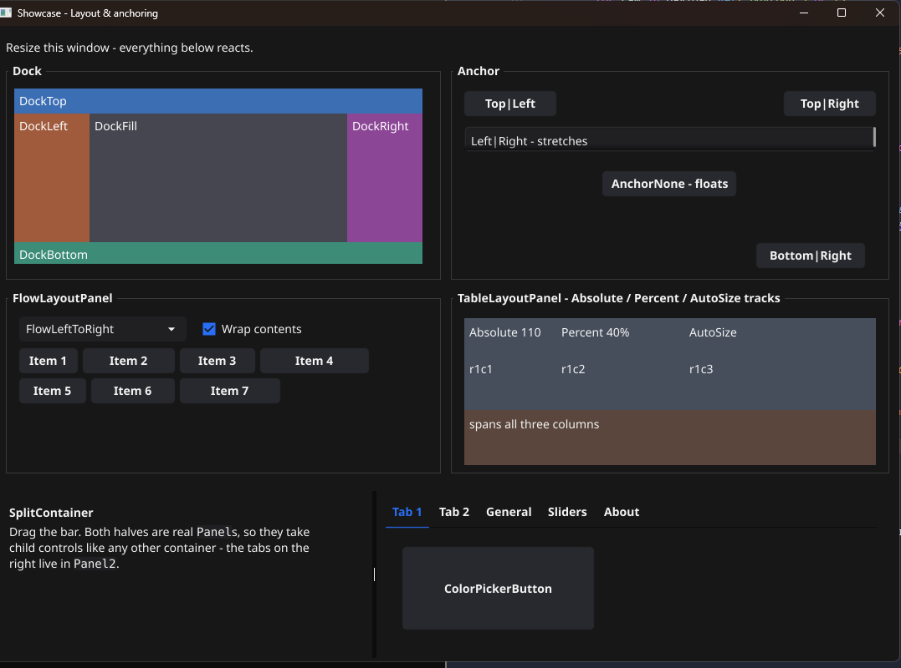
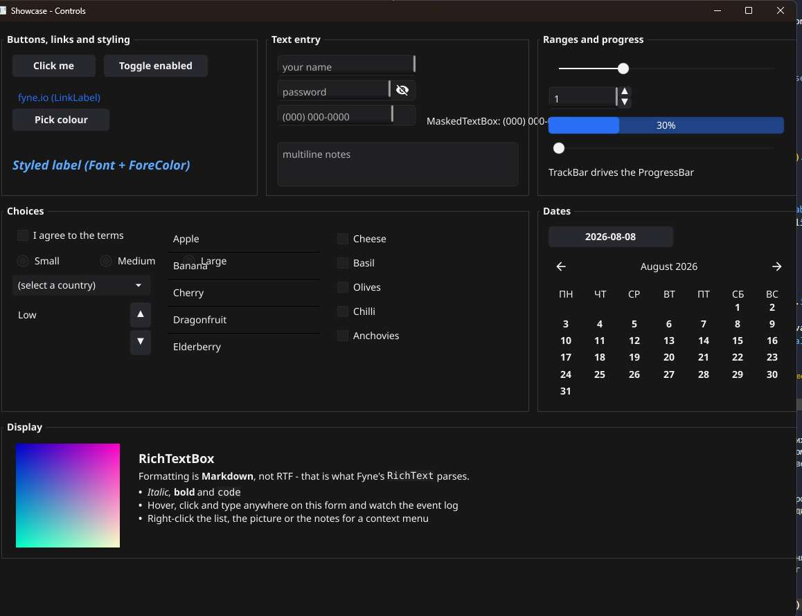
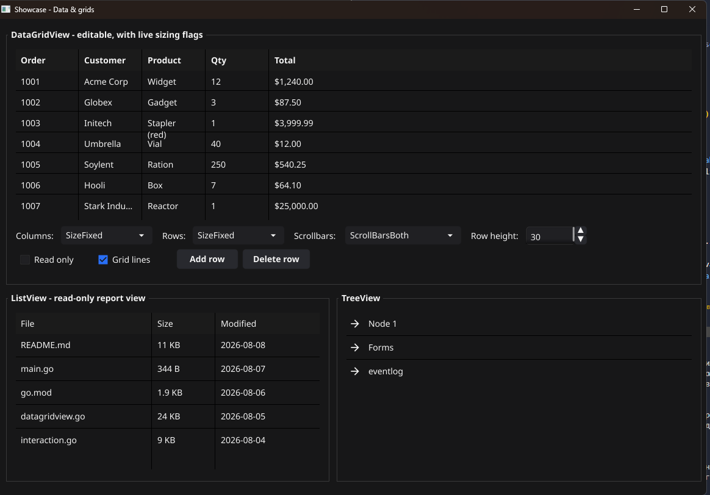

If you know WinForms,
you already know GoForms.
A form. Controls at X, Y, Width, Height. Docking and anchoring
that survive a resize. Events you attach with .Handle(…). And a
drag-and-drop designer that writes plain, readable Go — not a resource
blob you are never meant to open.

A compatibility layer, not a renaming
Rendering, windowing and input are handled by Fyne underneath — so you get GPU-accelerated drawing on Windows, Linux and macOS without writing a message loop. Everything above that line is WinForms.
Absolute positioning
Controls go where you put them. No flex containers to fight, no layout algebra to reverse-engineer when something lands in the wrong place.
Docking & anchoring
The same five dock styles and four anchor flags, with the same edge-carving order — plus flow, table and split containers when a grid is easier than arithmetic.
Real multicast events
Event[T] behaves like a C# event: .Handle(h) is +=, handlers run in registration order, and the signature is always (sender any, e T).
34 controls, one catalog
From Label to DataGridView, each named after the System.Windows.Forms type it stands in for — so the docs you already know still apply.
The partial-class split
Layout lives in Form-designer.go, your code in Form.go. The designer only ever touches the first, so it cannot eat what you wrote.
Held to its promises
Golden-file tests pin the arranged geometry of docked and gridded layouts, so a refactor that moves a control by a pixel fails the build.
The whole idea, in two files
A form is split exactly as a WinForms form is split into
Form1.cs and Form1.Designer.cs — except both halves
here are ordinary Go you can read, diff and review.
type MainForm struct { *goforms.Form btnGreet *goforms.Button lblHello *goforms.Label } func (mf *MainForm) initializeComponent() { mf.lblHello = goforms.NewLabel("Hello, World!") mf.lblHello.SetBounds(20, 20, 200, 24) mf.AddControl(mf.lblHello) mf.btnGreet = goforms.NewButton("Greet") mf.btnGreet.SetBounds(20, 60, 100, 30) mf.btnGreet.Click.Handle(mf.btnGreet_Click) mf.AddControl(mf.btnGreet) }
package mainform import "goforms" // The designer generated this stub the moment you // wired Click in the Events panel. It never // touches the file again. func (mf *MainForm) btnGreet_Click( sender any, e goforms.MouseEventArgs, ) { mf.lblHello.SetText("Clicked!") }
The designer edits Go, not a .resx
Drag a control onto the canvas and a line of Go appears in your file. Move it and the numbers change. There is no intermediate format, no regeneration step, and no state kept anywhere but the source.
-
Drop, drag, resize
A toolbox grouped the way the Visual Studio one is, snapping, multi-select, and an undo stack of its own — the designer writes files directly, so it does not borrow the editor's.
-
Docking shown honestly
The canvas runs the framework's own arrange pass, so a docked control is drawn glued to its parent's edge — where it will actually be — instead of at the coordinates it was dropped at.
-
Events in one click
Wire an event and the handler stub is created in the hand-written half, with the correct argument type, and your cursor is put inside it.
-
Files that stay clean
Every edit runs a tidy pass that drops what the edit made redundant: superseded setters, stacked event wirings, duplicated adds. The file after an hour of dragging reads like the file after five minutes of it.
The control catalog
Every type below is in the designer's toolbox and understood by the code generator — dropping one writes a constructor call, its setters, and its struct field, all named after their WinForms counterparts.
Common controls
Containers
Menus & toolbars
Data
What it looks like running
All of these are screenshots of GoFormsShowcase, which is in the repositories below and builds with one command.

System.Windows.Forms equivalent.
DataGridView with sortable, resizable columns, next to a TreeView.Get started
Go 1.23 or newer, plus the C toolchain and OpenGL headers Fyne needs on your platform.
# Both repositories, side by side - the apps find the # framework through a `replace` directive on ../GoForms. git clone git@github.com:Go-Forms/GoForms.git git clone git@github.com:Go-Forms/GoFormsShowcase.git cd GoFormsShowcase && go run .
# From a release .vsix: code --install-extension goforms-designer.vsix # Then, in VS Code: # Ctrl+Shift+P -> "GoForms: Create New Project..." # and open any *-designer.go file to get the canvas.
The four repositories
The framework stands alone; everything else consumes it.
The framework itself: controls, layout, events, dialogs, theming. No dependencies beyond Fyne.
The VS Code extension: the drag-and-drop canvas, the scaffolding commands, and the Go CLI that does the parsing and rewriting.
One form per subject — layout, controls, data, dialogs — with a live event log, so every claim on this page can be checked by running it.
A smaller sample app, closer to what a real project's first few forms look like.